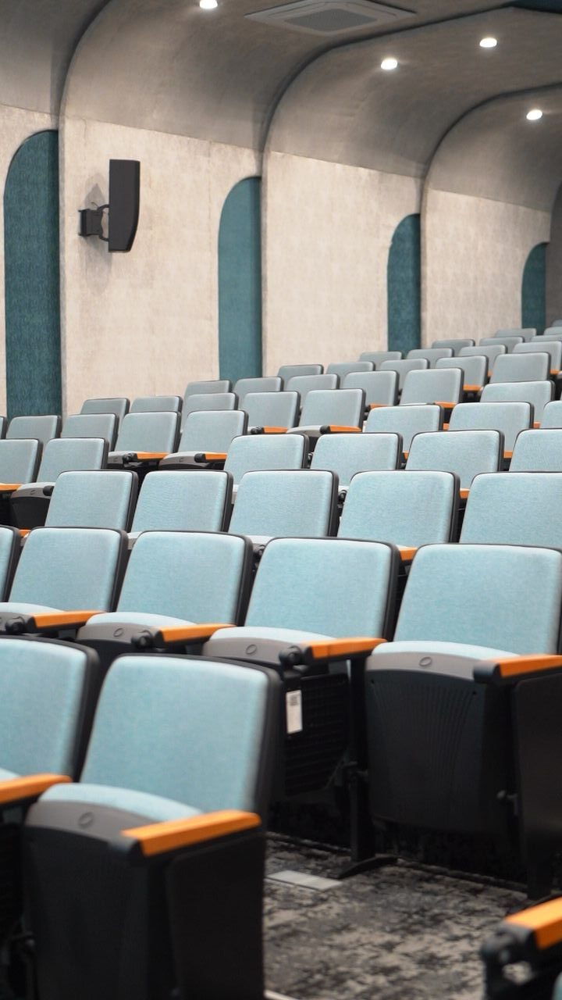

Auditorium Besar Kursi Biru Muda
Auditorium besar dengan banyak baris kursi biru muda bersandaran tangan kayu, lantai berundak, dan karpet motif abu-abu.
Lihat 21 fotoSatu proyek auditorium berlantai bertingkat, dari tahap pemasangan sampai hasil akhir: kursi biru bersandaran tangan kayu, lorong tengah, dan area sofa di bagian depan.
Tampilan akhir auditorium berundak setelah seluruh kursi terpasang. Kursi biru dengan panel samping kayu berlubang tersusun mengikuti undakan, dengan lorong tengah yang memisahkan dua sisi tempat duduk.
Di bagian depan terdapat area sofa dan meja kayu, sehingga ruangan dapat dipakai untuk acara resmi sekaligus menerima tamu.
Proyek pemasangan kursi auditorium pada ruangan berlantai bertingkat. Deretan kursi mengikuti undakan lantai sehingga peserta di baris belakang tetap memiliki pandangan yang baik ke depan.
Foto diambil saat kursi baru selesai dipasang dan masih berplastik pelindung. Lorong di sisi ruangan memudahkan peserta naik dan turun, dan lampu strip pada setiap undakan membantu penerangan jalan.
Foto dari dekat memperlihatkan bentuk kursi: sandaran tinggi berlapis kain biru, sandaran tangan kayu, panel samping berlubang, serta rangka dan kaki besi hitam yang dipasang kuat ke lantai.
Bagian belakang sandaran berpanel kayu, sehingga kursi tetap rapi dilihat dari baris di belakangnya.
Selain kursi auditorium, area depan ruangan dilengkapi sofa krem dan meja kayu untuk tamu undangan.
Warna krem dan kayu yang netral dipadukan dengan kursi biru di belakangnya dan karpet abu-abu biru di lantai.
Auditorium besar dengan banyak baris kursi biru muda bersandaran tangan kayu, lantai berundak, dan karpet motif abu-abu.
Lihat 21 fotoKursi biru dengan sandaran tangan kayu di atas karpet biru, menghadap layar dan podium.
Lihat 8 fotoAuditorium berundak berdinding panel kayu dengan lampu LED hangat, diisi kursi abu-abu bersandaran tangan kayu.
Lihat 7 foto
Ceritakan ukuran ruangan dan kebutuhan acara Anda. Kami bantu memilihkan model kursi auditorium Zeco yang sesuai dengan kebutuhan dan anggaran Anda.